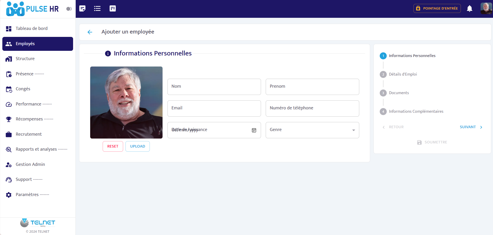
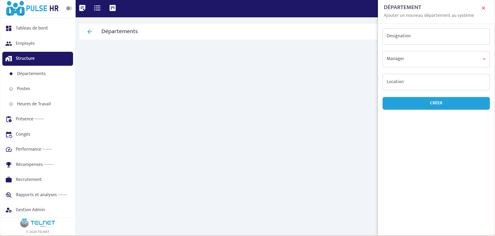
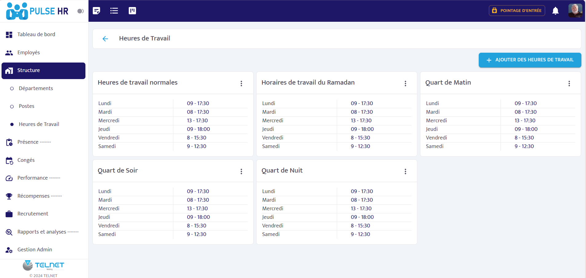
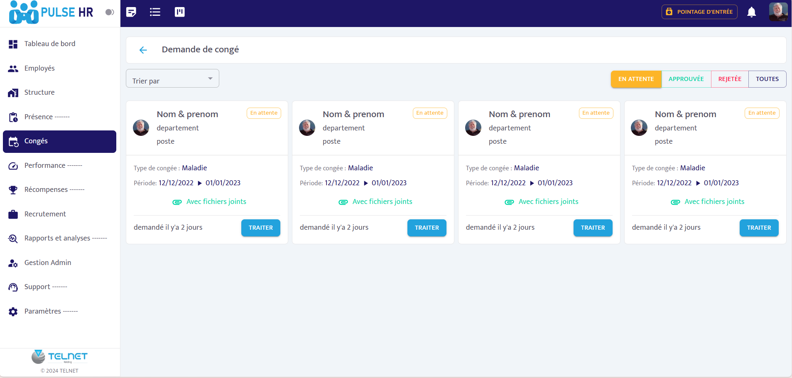
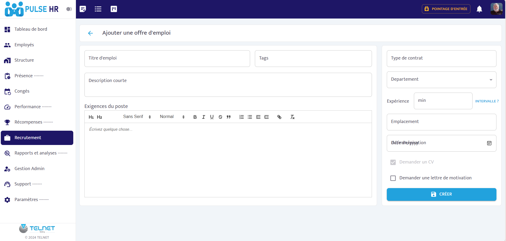
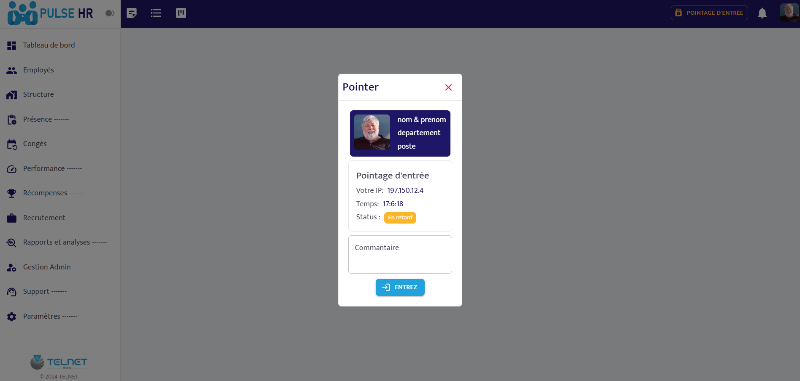
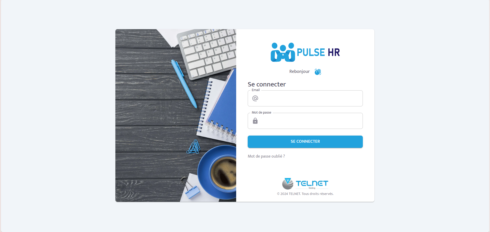

Problem
HR teams need a centralized workspace to manage people, attendance, leave requests, departments, job offers, and reporting without switching between disconnected tools.
HR Platform Analytics Workflow
Human Resources Management Platform
A full-stack HR application for managing employees, organizational structure, attendance, leave requests, recruitment, performance, and reporting inside a unified dashboard.

HR teams need a centralized workspace to manage people, attendance, leave requests, departments, job offers, and reporting without switching between disconnected tools.
Pulse HR brings key HR workflows into one interface with dashboards, employee records, organizational structure, time tracking, leave management, recruitment forms, and analytics.
I contributed to responsive frontend modules, reusable UI, form workflows, API integration, state management, and full-stack feature implementation during my internship at Telnet.







Next.js, React, TypeScript, Material UI, React Hook Form, React Query, Redux Toolkit, Axios, Laravel, Eloquent ORM, MySQL, REST APIs, Agile development, debugging, testing, and continuous improvement.